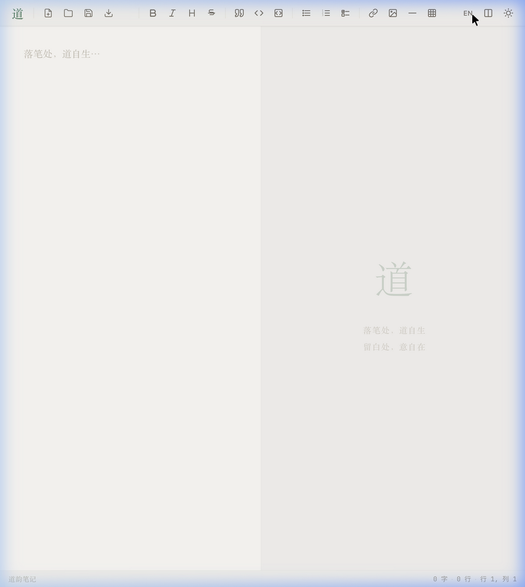
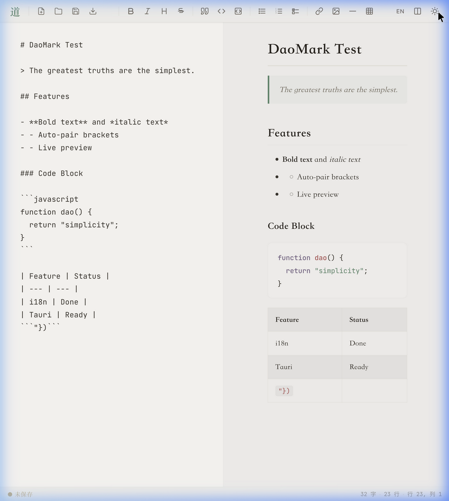
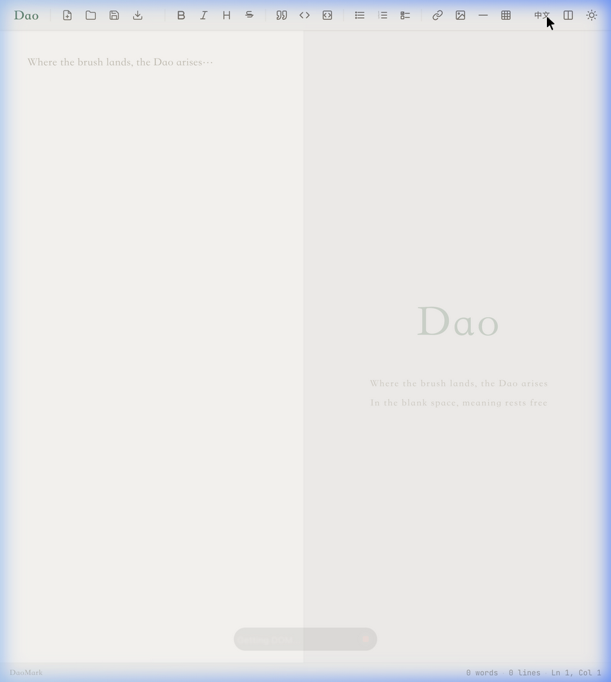

道可道，非常道 — The Dao that can be told is not the eternal Dao.
界面隐于无形，唯文字跃然。The interface disappears. You see only your writing.
空非空，乃万象之始。Emptiness is not nothing — it is possibility.
宣纸暖调，墨色深浅。Ink-wash palette, warm and alive.
可去则去，留者皆有其道。If it can be removed, it should be.
清净无为，自然而然

明亮主题 · 落笔处，道自生

暗色主题 · 实时预览 · 语法高亮

English · i18n internationalization
至简而不简
实时预览，所见即所得 (120ms)
代码块语法高亮，典雅配色
水墨双主题，跟随系统切换
中文 / English 双语国际化
macOS 原生快捷键 ⌘B ⌘I ⌘K ⌘S
原生对话框打开/保存/导出
自动配对、列表续行、Tab 缩进
分栏拖拽 / 三种视图模式
三行命令，道自显现